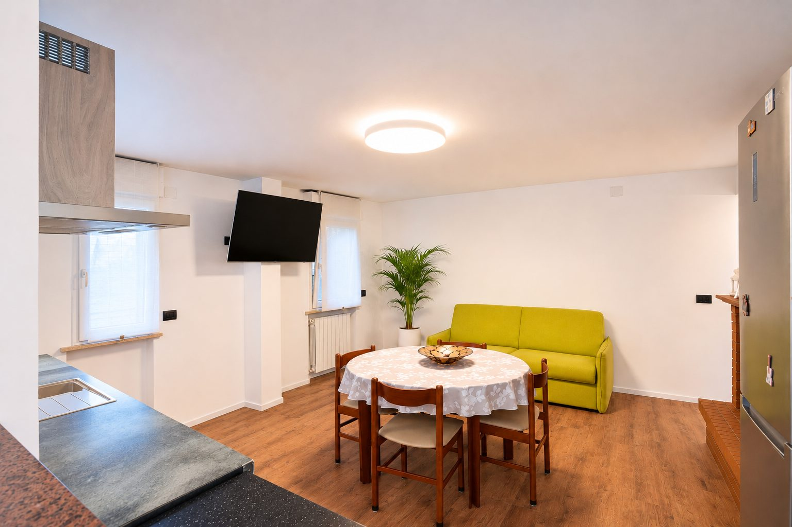
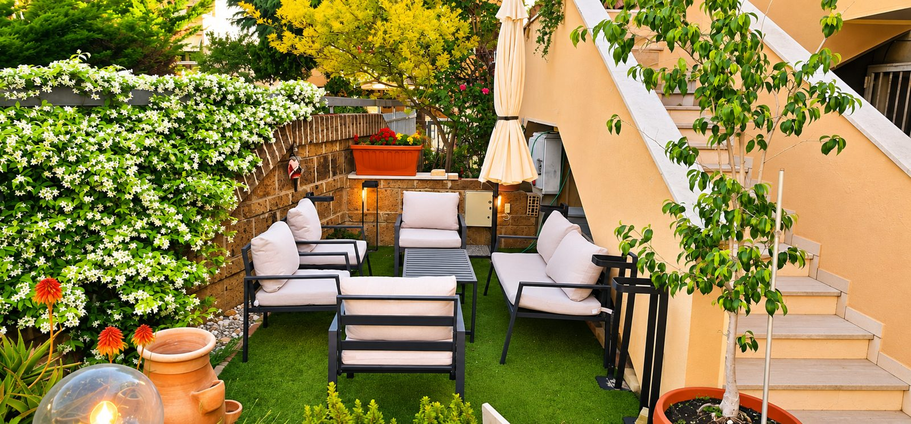
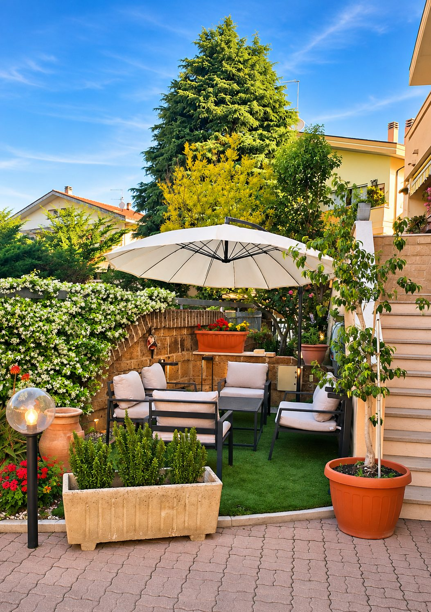
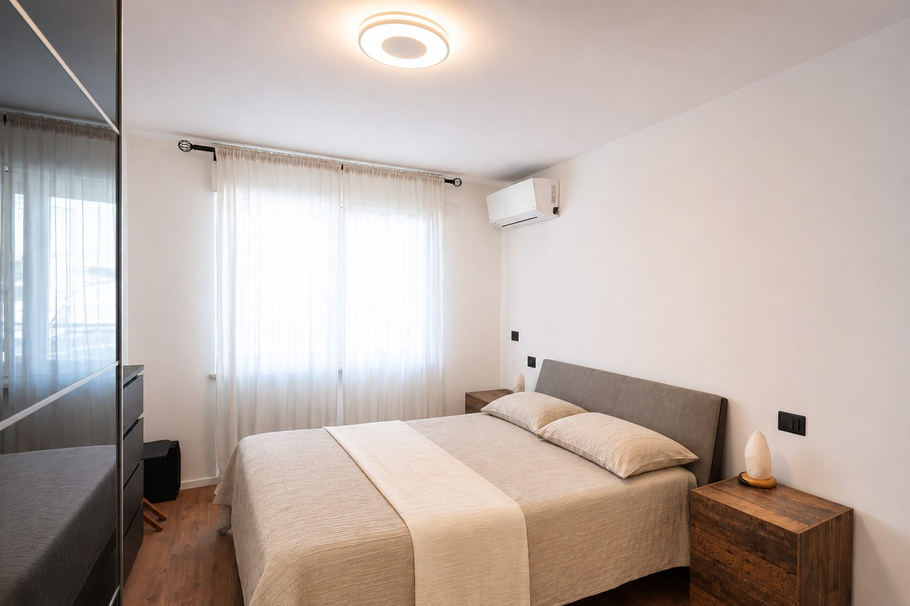
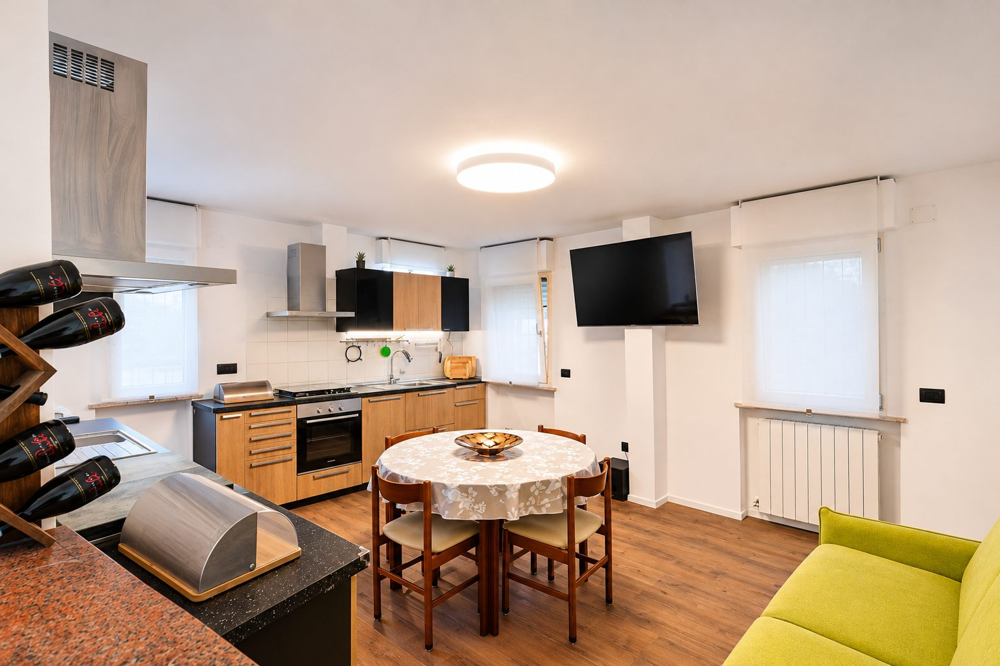
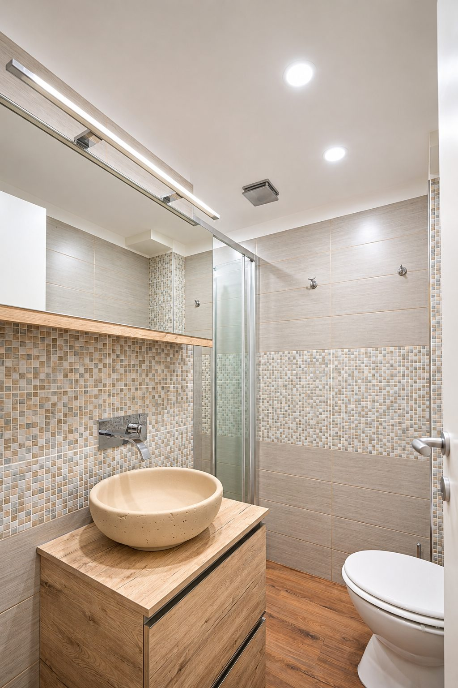
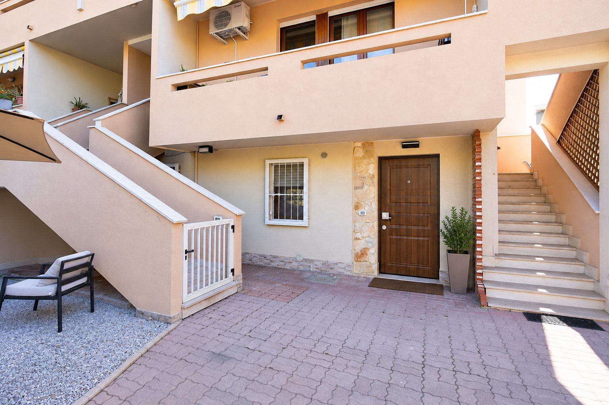
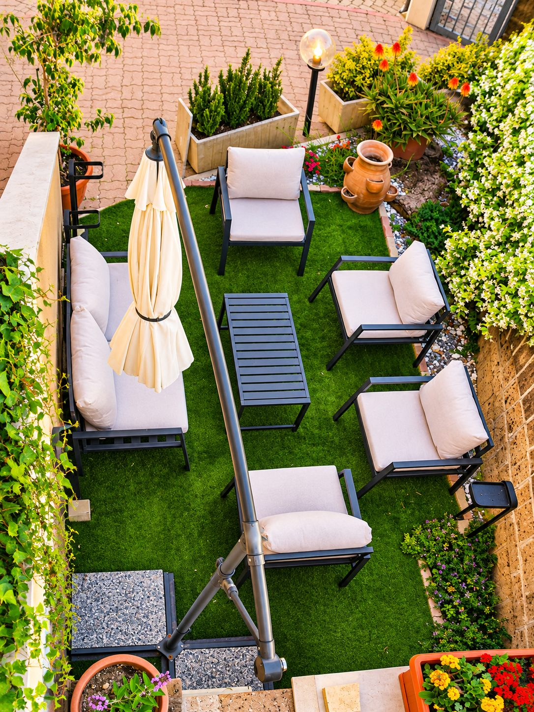
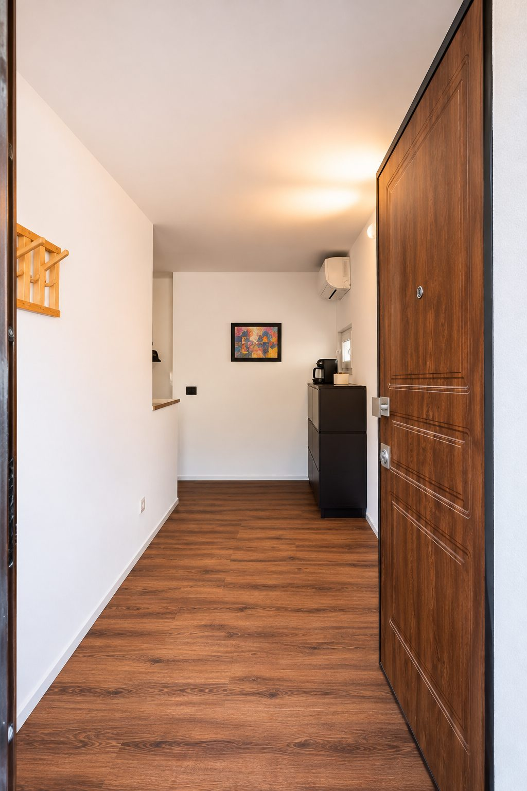
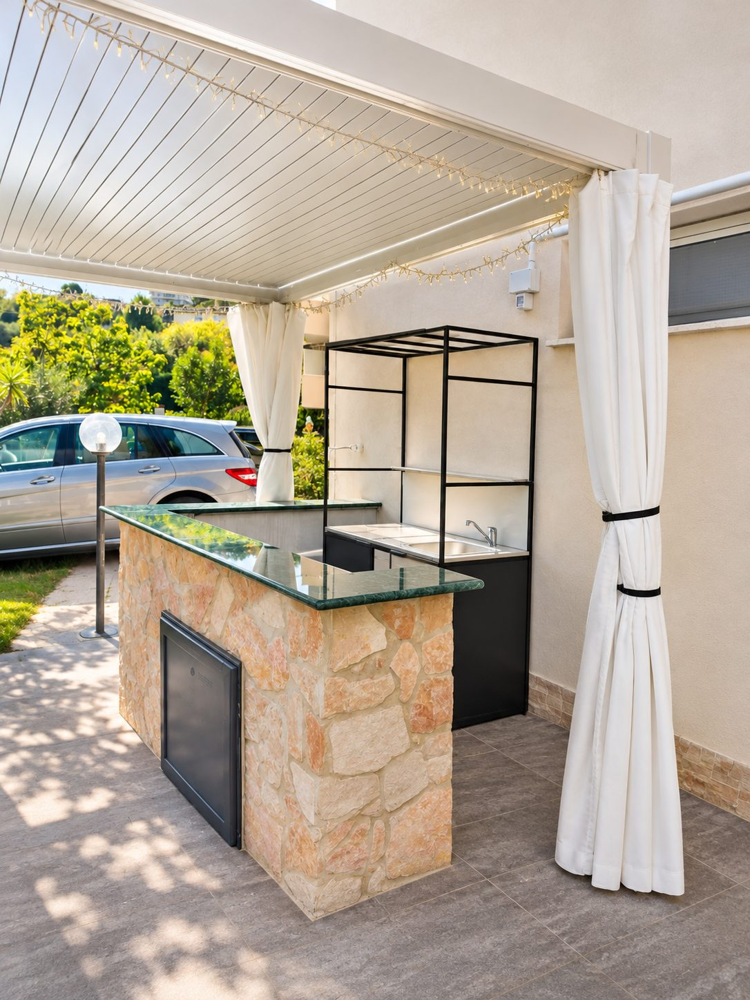

Francavilla al Mare
Spiagge, lungomare, Pontile Sirena, Paese Alto e Museo Michetti. Un itinerario da vivere anche fuori stagione.
Il mare vicino. L’Abruzzo da scoprire.
Un luogo da cui partire, in ogni stagione.
Una dimora raccolta e curata a Francavilla al Mare, tra il ritmo dell’Adriatico e la bellezza dell’entroterra abruzzese. Ambienti rinnovati e il piacere di scegliere ogni giorno un’esperienza diversa.

Zona giorno con cucina, camera matrimoniale, bagno e tutti i comfort per sentirsi a casa: climatizzazione, Wi-Fi, televisori e lavasciuga. Tutto quello che serve per vivere il soggiorno in libertà, tra una passeggiata sul mare e una giornata alla scoperta dell’Abruzzo.
Esplora le fotografieIl verde, i fiori, un salottino all’aperto e il tempo di fermarsi. Un piccolo rifugio per leggere, conversare e godersi la luce delle giornate abruzzesi.

Gli interni, la facciata e gli spazi esterni.








Immagini fotografiche rielaborate digitalmente a fini illustrativi. Alcuni dettagli e allestimenti possono differire dallo stato attuale.
Il mare, i borghi, la natura e il fascino della Maiella. Parti da Dimora Oceano e lasciati sorprendere dall’Abruzzo, seguendo la curiosità e la voglia di esplorare. Vicino o lontano, ogni giornata può regalarti qualcosa di diverso.
Spiagge, lungomare, Pontile Sirena, Paese Alto e Museo Michetti. Un itinerario da vivere anche fuori stagione.
Ponte del Mare, Pescara Vecchia, Casa Natale di Gabriele d’Annunzio, musei, locali e passeggiate sul lungomare.
Centro storico, archeologia e scorci sulla valle.
Castello Aragonese, centro storico e panorami sulla costa; controlla il percorso stradale prima di partire.
San Vito Chietino, primi trabocchi, spiagge e tratti della Via Verde per camminare o pedalare.
Castello ducale, vicoli, arte e tradizioni.
Uno dei borghi da esplorare lungo il percorso verso la costa meridionale.
Abbazia di San Giovanni in Venere e vista sull’Adriatico; verifica la distanza effettiva.
Borghi ai piedi della montagna, escursioni e paesaggi che cambiano con le stagioni.
Escursioni estive e attività sulla neve quando le condizioni lo consentono. Verifica impianti, viabilità e meteo.
Centro storico, botteghe e tradizioni ai piedi della Maiella.
Gole e percorsi naturalistici, con distanza e accessibilità da verificare.
Per una gita più lunga: Campo Imperatore e Gran Sasso, oltre i tre anelli. Prima di partire verifica meteo, strade, aperture e accessibilità.
Un territorio da scoprire anche attraverso i suoi vini. Dalle colline affacciate sull’Adriatico ai vigneti dell’entroterra, l’Abruzzo custodisce una tradizione vinicola ricca di carattere, sapori e storie da conoscere. Un’esperienza da assaporare senza fretta.
Dimora Oceano nasce con il desiderio di offrirti qualcosa in più di un semplice alloggio. Stiamo lavorando a esperienze dedicate al movimento, al benessere e al relax, da vivere su richiesta. Le attività extra saranno disponibili su prenotazione, con costi separati dal soggiorno e previa conferma.
Trabocchi, ristoranti, prodotti locali e piccoli produttori: consigli che nasceranno dalla conoscenza diretta dei luoghi.
Un giorno in riva al mare, quello dopo tra sentieri, borghi e montagne. È questa la libertà dell’Abruzzo.
Dimora Oceano. Il mare vicino, il verde intorno e la libertà di vivere l’Abruzzo con i propri tempi.
Sito informativo in anteprima. Le prenotazioni non sono ancora attive. Le esperienze extra saranno disponibili soltanto su richiesta e previa conferma, con costi separati.